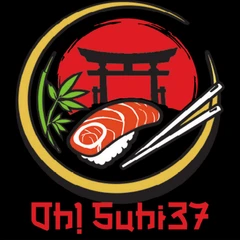
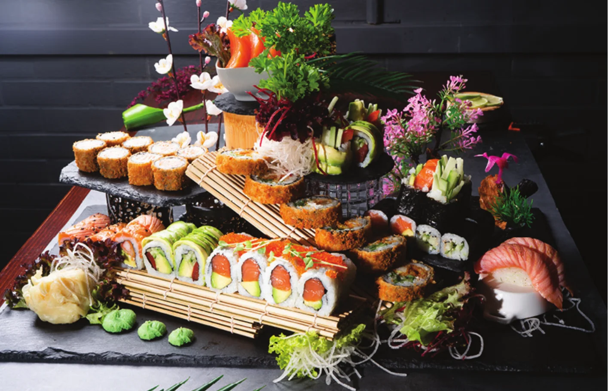
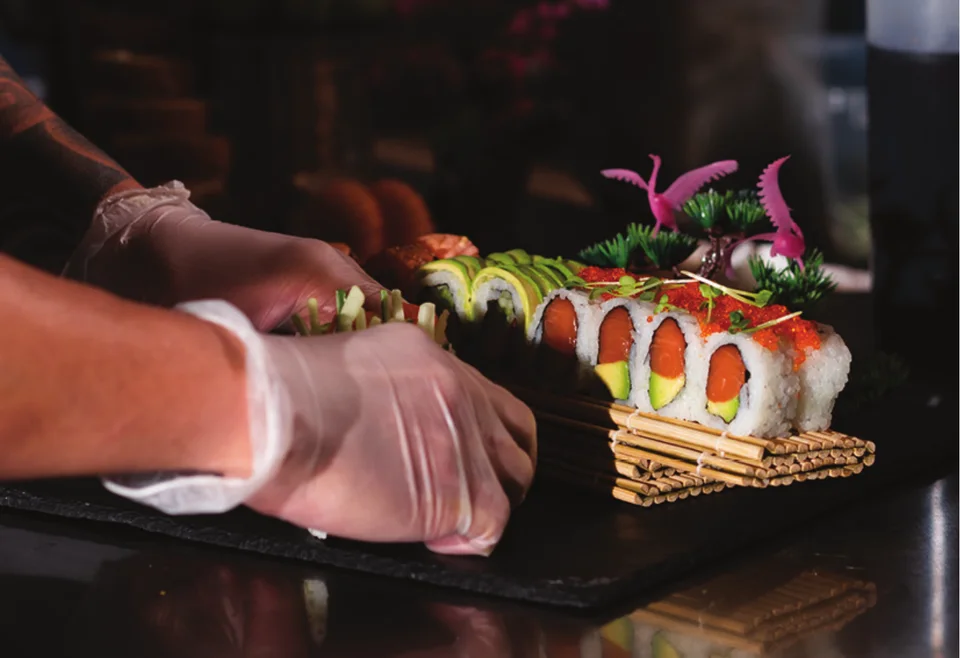
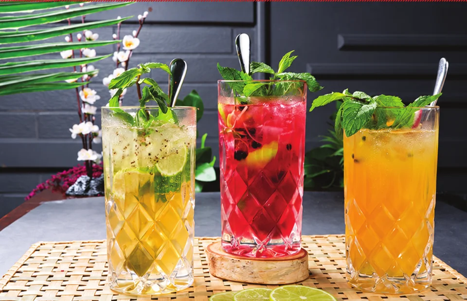

01 / NIGIRI
SAKE – LACHS
5,90 €Sushi-Reishäppchen mit Lachs.
Allergene und Zusatzstoffe: D, N2 STK.

Oh! Sushi 37VIETNAM & JAPANVIETNAMESISCHE & JAPANISCHE KÜCHE
ERWITTE, DEUTSCHLAND
Hellweg Straße 30 · Erwitte Mo 08–22 Uhr · Di Ruhetag
Ein Nigiri. Eine warme Schale Pho. Oder Fusion Rolls für den ganzen Tisch. Bei Oh! Sushi 37 treffen japanische Klassiker auf die Aromen der asiatischen Küche.
Zum Mittagessen. Zum Abendessen. Zum Teilen.
Unsere Karte kennenlernen ↗
Ein Nigiri zum Anfang.
Eine Platte für den ganzen Tisch.
Und alles dazwischen.
01 / NIGIRI
Sushi-Reishäppchen mit Lachs.
02 / FUSION ROLLS
Avocado, Gurke, Mango, Philadelphia, Surimi, Tempura Garnelen, Lachs, Thunfisch und Jakobsmuscheln, dazu Unagi-Soße und Sesam.
03 / SIGNATURE
Medium gegrilltes Lachsfilet.
04 / ZUM TEILEN
8 St. Freestyle Roll, 6 St. Maki, 2 St. Nigiri, 10 St. Toronto Crunchy, 3 St. Sashimi.
Best Friend Platte, Sumo Platte oder Oh! Sushi37 Family: Entdecken Sie unsere Sushi Sets zum Teilen.
Sushi Sets entdecken ↗
AUCH INS GLAS
Limonaden, Cocktails, Bier und Wein. Finden Sie etwas Passendes zu Ihrer Auswahl.
Die Getränkekarte ↗Sushi, warme Gerichte, Cocktails und mehr.
Alle Gerichte und Preise im Überblick.
02 / UNSERE KARTE
Vorspeisen
Suppen, Salate und kleine Gerichte zum Anfang.
Kein Eintrag gefunden. Versuchen Sie einen anderen Suchbegriff.
Suppe mit Hühnerfleisch, Kokosmilch, Zitronengras, Gemüse, verfeinert mit Koriander.
Klare Brühe mit gefüllten Wantan, Garnelen, Hühnerfleisch, Gemüse und Koriander.
Suppe mit Lachs, Garnelen, Surimi und Gemüse, verfeinert mit Koriander.
Scharf eingelegter Chinakohl mit Knoblauch nach traditioneller Art.
Frische Mangostreifen mit Garnelen, Gemüse, Salat, Koriander, Röstzwiebeln und Fisch-Limetten-Dressing.
Saisonaler Salatteller mit Avocado, Erdnüssen, Tomaten, Gurke und Bohnen, dazu Sesam-Dressing.
Frisches Gemüse, umhüllt von knusprigen Frühlingsblättern.
Bratteigtaschen gefüllt mit Hühnerfleisch, dazu Süß-Chili-Dip.
gegrillte Hähnchenschenkel-Spieße, mit Teriyakisoße und Sesam
Traditionelle hausgemachte Frühlingsrollen mit Glasnudeln, Morcheln, Frühlingszwiebeln, Kohlrabi, Hähnchenschenkel und Garnelen.
Frische Rolle gefüllt mit Salat, Reisnudeln, Erdnüssen, serviert mit Hoisin-Soße
3 × Tempura Garnelen und Salat mit Unagi-Cocktail-Soße.
Japanische Sojabohnen mit Meersalz.
Sommerrollen, Gyoza, Edamame, Yaki Tori, Kimchi-Salat, Frühlingsrollen, dazu Teriyaki-Soße. Gemischte Vorspeisenplatte für:
Cremige Curry-Kokos-Soße mit Pilzen, Zucchini, Karotten, Brokkoli und Sesam, serviert mit Kurkuma-Reis. Wahlweise mit:
Gebratene Japanische Udon-Nudeln mit Paprika, Zucchini und Karotten in hausgemachter Unagi-Soße, dazu Röstzwiebeln. Wahlweise mit:
Tamarind Soße mit Paprika, Pilze, Zucchini, Karotten, Brokkoli, serviert mit Kurkuma-Reis. Wahlweise mit:
Traditionelle vietnamesische Reisbandnudelsuppe mit einer kräftigen Rinderbrühe und frischen Kräutern.
Im Wok geschwenkte Rinderstreifen mit Ananas, Tomaten, Zuckerschoten, Peperoni und Zwiebeln. Dazu Kurkuma-Reis.
Gebratene Jakobsmuscheln mit Zitronengras, Chili und saisonalem Gemüse, Limettenblättern, dazu Kurkuma-Reis.
Knusprige Entenbrust mit frischer Ananas, Brokkoli, Tomaten in frischer Süß-Sauer-Soße. Dazu Duftreis. Mit Kurkuma-Reis.
Mariniertes Rindfleisch gebraten auf Reisnudeln mit gemischtem Salat, Koriander, Erdnüssen, Röstzwiebeln, dazu Fisch-Limetten-Dressing.
Gebratenes saisonales Gemüse in Yakinikusoße mit Wildkräutersalat. Dazu wahlweise Süßkartoffeln, Pommes oder Reis.
Medium gegrilltes Lachsfilet.
Gegrillte Garnelen und Jakobsmuscheln mit Rosmarin.
Geschwenktes Rinderfilet mit Paprika, Zwiebeln, Knoblauch, Koriander, Lauchzwiebeln und Pilzen.
Sushi-Reis, Avocado, Japanische Bohnen, Gurke, gemischter Salat mit Cocktail-Unagi-Soße
Mit Lauchzwiebeln, Koriander, scharfer Sauce & Reiscrackern auf Avocadobett. Wahlweise mit Lachs oder Thunfisch.
Mit Zwiebeln, Lotuswurzel, Shiso Purple und Ponzu-Oliven-Soße. Wahlweise mit Lachs (flambiert) oder Thunfisch (flambiert).
Wakame Salat mit Sakura-Sprossen, Shiso Purple, Sesam-Teriyaki-Dressing und ...
Sushi-Reishäppchen mit verschiedenen Toppings.
Sushi-Reishäppchen mit Lachs.
Sushi-Reishäppchen mit Thunfisch.
Sushi-Reishäppchen mit Garnelen.
Sushi-Reishäppchen mit BBQ Aal.
Sushi-Reishäppchen mit Jakobsmuscheln.
Rohes Fischfilet oder Meeresfrüchte auf Seetang-Salat und Sesam-Dressing.
Lachs, Thunfisch, Jakobsmuscheln, Garnelen.
Flambierter Lachs mit Lauchzwiebeln und Spezial-Sauce.
Flambierter Thunfisch mit Lauchzwiebeln und Spezial-Sauce.
Gekochter Thunfisch, Mayo, Chilisauce, Pfeffer, Lauchzwiebeln.
Füllung mit Frischkäse, gewickelt in Reis, ummantelt von Fischrogen oder Sesam.
Lachs, Avocado, Frischkäse, Tobiko.
Avocado, Surimi, Frischkäse, Tobiko.
Thunfisch, Avocado, Frischkäse, Tobiko.
BBQ Aal, Avocado, Frischkäse, Sesam.
Gebackene Garnelen, Avocado, Frischkäse, Sesam.
Gebackene Lachshaut, Gurke, Sesam.
Avocado, Gurke, Mango, Oshinko, Sesam.
Thunfischtatar, Avocado, Lauchzwiebeln und scharfe Soße.
Lachstatar, Avocado, Lauchzwiebeln und scharfe Soße.
Hühnerfleisch, Gurke, Frischkäse, Sesam
Spezialitäten des Sushi-Meisters.
Kreative Kreation unseres Sushi-Chefs.
Kreative Kreation unseres Sushi-Chefs.
Lachshaut, Avocado, Philadelphia, Surimi, Gurke, Sesam, bedeckt mit BBQ Aal und Unagi-Soße.
Avocado, Gurke, Mango, Philadelphia, Surimi, Tempura Garnelen, Lachs, Thunfisch und Jakobsmuscheln, dazu Unagi-Soße und Sesam.
Ebi Tempura, Gurke, Avocado, Surimi, Mango, Thunfischmantel, Philadelphia und Unagi-Soße, Sesam.
Lachstatar, Gurke, Mango, Surimi, Avocado, Lauchzwiebeln, scharfe Soße.
Thunfischtatar, Gurke, Lauchzwiebeln, Avocado, Surimi, Mango, scharfe Soße.
Flambierte Spezialitäten des Sushimeisters.
Thunfischtatar, Avocado, Lauchzwiebeln, Surimi, Gurke, Cocktailsoße, Spicy Soße, Tobiko.
Lachstatar, Avocado, Gurke, Surimi, Lauchzwiebeln, Cocktailsoße, Spicy Soße, Tobiko.
Lachs, Thunfisch, Avocado, Gurke, Surimi, Cocktailsoße, Spicy Soße, Unagi-Soße und Tobiko.
Avocado, Gurke, Philadelphia, Surimi, Mango, Lachshaut & flambierter Lachsmantel.
Avocado, Gurke, Philadelphia und gebackene Garnelen, bedeckt mit flambiertem Rindfleisch, dazu Unagi-Soße.
Ebi Tempura, Gurke, Avocado, Mango, Surimi, Philadelphia, Lachsmantel, Cocktailsoße, Unagi-Soße, Spicy Soße.
Lachstatar, Avocado, Gurke, Garnelen, Philadelphia, Surimi, Lauchzwiebeln, Cocktailsoße, Unagi-Soße und Tobiko.
Gebackenes Sushi im Tempuramantel. Mit Frischkäse, Cocktailsoße und Unagi-Soße.
Lachs, Avocado. Gebackenes Sushi im Tempuramantel mit Frischkäse, Cocktailsoße und Unagi-Soße.
Thunfisch, Avocado. Gebackenes Sushi im Tempuramantel mit Frischkäse, Cocktailsoße und Unagi-Soße.
Tempura Garnelen, Avocado. Gebackenes Sushi im Tempuramantel mit Frischkäse, Cocktailsoße und Unagi-Soße.
Huhn, Avocado, Gurke. Gebackenes Sushi im Tempuramantel mit Frischkäse, Cocktailsoße und Unagi-Soße.
Grüner Spargel, Avocado, Gurke, Mango, eingelegter Rettich. Gebackenes Sushi im Tempuramantel mit Frischkäse, Cocktailsoße und Unagi-Soße.
Surimi, Avocado, Gurke, Frischkäse, scharf gewürzter Thunfisch, Unagi-Soße.
Gebackenes Sushi im Tempuramantel. Mit Mango-Soße und Unagi-Soße.
6 St. Sake Maki, 3 St. Sake Nigiri, 3 St. Sake Sashimi.
6 St. Tekka Maki, 3 St. Maguro Nigiri, 3 Maguro Sashimi.
8 St. California I-O, 6 St. Sake Maki, 3 St. flambierte Sashimi Tuna.
8 St. Vegetarische I-O, 6 St. Kappa Maki, 6 St. Avocado Maki und Wakame-Salat.
8 St. Dragon Roll, 6 St. verschiedene Nigiri.
8 St. Freestyle Roll, 6 St. Maki, 2 St. Nigiri, 10 St. Toronto Crunchy, 3 St. Sashimi.
8 St. Freestyle Roll, 8 St. Fusion Roll, 6 St. Maki, 3 St. Nigiri, 6 St. Sashimi, 10 St. Crunchy Big Roll.
8 St. Freestyle Roll, 8 St. Aburi Fusion Roll, 8 St. Inside Out, 6 St. Maki, 4 St. Nigiri, 20 St. Crunchy Big Roll, 6 St. Sashimi.
All-in-Kreation des Sushi-Chefs (Überraschungsmenü).
Gebackene Banane mit Vanilleeis, dazu Honig und Erdnüssen.
Hausgemachte Panna Cotta mit Mango.
Japanische Reisküchlein mit Grüntee-Eisfüllung.
Knusprig gebackenes Vanilleeis im Kokosmantel.
Schwarzer Klebreis mit Kokosmilch, Mangopüree und Ingwer.
Limettensaft, Rohrzucker, Minze, Mineralwasser
Frischer Ingwer, Ginger Ale, Tonic Wasser
Früchtetee mit Minze und Beeren
Grüner Tee
Weißer und Grüner Tee mit rosiger Note
Ingwer / Orange
Gosling’s Black Rum | frischer Limettensaft | Spicy Ginger Beer | gedörrte Limetten
Maker’s Mark Bourbon | Campari | roter Wermut | Orangen
Vodka | frischer Limettensaft | Spicy Ginger | Gurke
Vodka | Pfirsichlikör | frischer Zitronensaft | Ananassaft | Cranberrynektar | gedörrte Ananas
Kubanischer Rum | frischer Limettensaft | Zuckersirup | Soda | Minze | Himbeer
Bourbon Whiskey | frischer Zitronensaft | Zuckersirup | Angotura | gedörrte Zitrone
Kubanischer Rum | Kokosmilch | Ananassaft | Kokossirup | gedörrte Ananas
Kubanischer Rum | frischer Limettensaft | Weißer Rohrzucker | Soda | Minze
Holunderblütersirup | Limettensaft | Prosecco | Soda | Minze | Limette
Aperol | Prosecco | Soda | gedörrte Orangen
Holunderblütersirup | Limettensaft | Soda | Minze | Limetten
Frischer Zitronensaft | Orangensaft | Maracujanektar | Ananassaft | Grenadine | Ananas | Minze
Holunderblütersirup | Limettensaft | Bluna Zitrone | Tonic Water | Minze | Gurke
Limette | weißer Rohrzucker | Maracujanektar | Thomas Henry Ginger Ale
Kokossirup | Kokosmilch | Ananassaft | Minze
Siegfried Wonderleaf (alkoholfreier Gin) | Frischer Zitronensaft | Zuckersirup | Soda | Zitrone
40%
40%
40%
40%
40%
45,80%
40%
43%
40%
40%
43%
47%
Weingut trocken Baden 12,5 vol%
Weingut Andres pfalz trocken 12,0 vol%.
Cantina di Custoza / Veneta / Italien / trocken / 12,5 vol%
Weingut Baldauf / franken / trocken / 12,5 vol%
Villa carume / Sizilien / Italien / trocken / 12,5 vol%
Weingut Paladin / Veneto / Italien / Halbtrocken / 12,5 vol%
Weingut Laufen / Baden / trocken / 13,5 vol.%
Cantina Valdadige / Trentino / italien / trocken / 12,5 vol.%
Bodegas Rodriguez Sanzo / Rioja / Spanien / trocken / 13,5 vol.%
Cantina Torrevento / Apulien / Italien / trocken / 13,0 vol.%
Weingut Hammel & Cie / Pfalz / trocken / 11,5 vol.%
Weingut Pratello / Lombardei / Italien / trocken / 11,5 vol.%
Alle Preise in Euro. Allergene und Zusatzstoffe sind wie in der jeweiligen Speise- und Getränkekarte angegeben. Die Legenden finden Sie unten.
Wählen Sie Datum, Zeit und Gästezahl. Wir bestätigen Ihre Anfrage persönlich. Dienstag ist Ruhetag.
Tisch anfragen ↗Oder direkt anrufen
02943 9800335 ↗